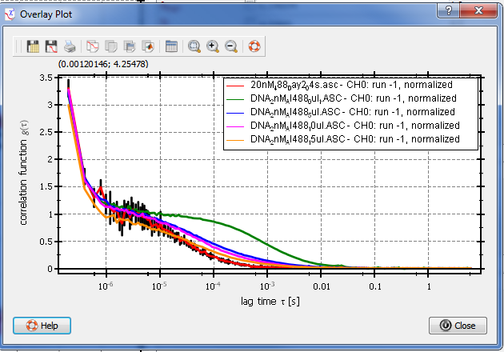

$$qf_commondoc_header.start$$ $$qf_commondoc_header.end$$
Often it is desireable to overlay the correlation functions from several RDRs in a single plot (e.g. to find outliers, or for a comparison plot in a paper). This can easily be done, using the "overlay tool" provided by the FCS fit:
- If you didn't add an FCS Fit to your project yet, do so now (click in Data Items|Insert Evaluation|FCS Curve Fitting)
- Open an FCS MaxEnt window (double-click the FCS: MaxEnt Fit evaluation (
 ) in the project tree in QuickFit's main window).
) in the project tree in QuickFit's main window).
- The Fit editor pops up. In the "Evaluation" tab, click on the menu entry
Tools|Overlay plot
- A new window will open up, where you can select (in the list) the RDRs, that you want to compare. You can also select, which data to show in the overlay plot (data or data+fit and whether it should be normalized by the particle number of the current fit or not):
 For further general information on how to interact with this dialog, see the basic RDR selection dialog documentation.
For further general information on how to interact with this dialog, see the basic RDR selection dialog documentation.
- After a click on "OK", you get a new window with the desired plot:

$$info:The plot will contain the currently displayed run from all selected files. You can also select to display the MaxEnt distributions as function of the diffusion time p(τD), or the diffusion coefficient p(D).$$
- See the help on the generally used plotter widget for more information on the interaction with the plot! You can especially use the function "copy plot to table RDR" (right-click on the plot) to convert the plot into an editable table RDR object in the project. Then you can edit all data and all plot properties in the plot!